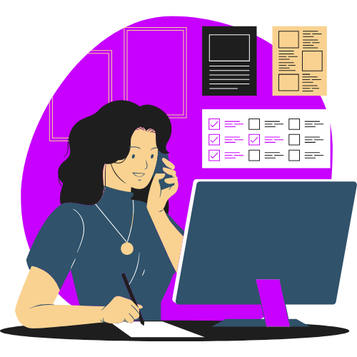

Workflows
that work.
Com o mercado de trabalho cada vez mais exigente, desenvolver soft skills como comunicação, liderança e inteligência emocional, se tornou essencial. No entanto, muitos profissionais não sabem como aprimorar e demonstrar essas competências. Este projeto propõe trilhas de desenvolvimento personalizadas que ajudam o usuário a identificar, desenvolver e aplicar suas soft skills de forma estratégica, melhorando sua performance e ampliando suas oportunidades profissionais.
Faça a sua trilha
Descubra sua personalidade profissional e dê um passo certeiro na sua jornada de carreira